Niveau 4e
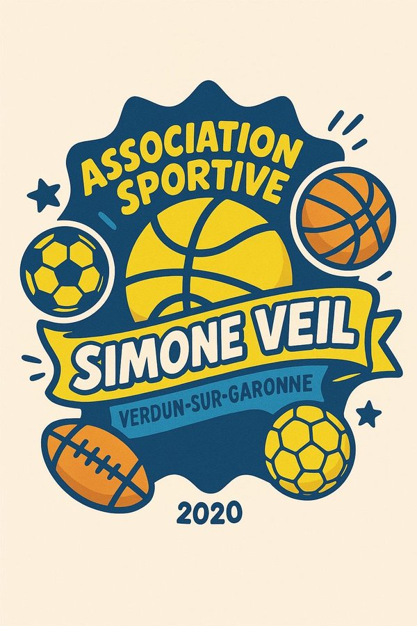
Tes activités de 4e !
Retrouvez ici toutes les activités physiques travaillées en 4e. Cliquez sur une activité pour dérouler ses ressources.
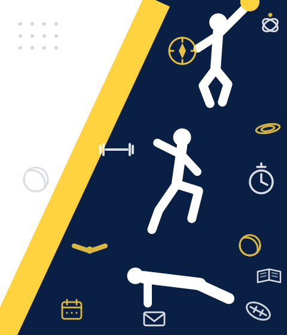
1. 🥊 Boxe française
⭐ L'essentiel en 3 points
- Ton objectifGagner un assaut en touchant sans te faire toucher, avec des touches contrôlées et en assurant ta sécurité comme celle de ton adversaire.
- Comment tu es évaluéUn tournoi géré en autonomie par groupes de 5 ou 6, avec des assauts de 1'30 où tu passes tour à tour tireur, arbitre et juge.
- La clé pour progresserMaîtrise la distance, ne touche que les zones autorisées et garde ta garde après chaque coup.
✅ Acquisitions prioritaires
Le tireur (en attaque et en défense)
- Maîtriser la distance et le contrôle des touches / l'impact (toucher sans frapper : touche à rebond).
- Connaître et respecter les zones de touches autorisées (cuisses, buste, front).
- Apprendre et maîtriser les coups de base (direct bras avant, fouetté).
- Agir au bon moment : observer l'adversaire pour anticiper et choisir une réponse adaptée.
- Se déplacer en restant face à face.
- Contrôle de ses actions et de ses émotions : accepter de toucher et d'être touché.
- Apprendre à se déplacer et à esquiver et à faire des parades en étant dynamique sur ses appuis.
- Apprendre à garder sa garde après un coup.
L'arbitre
- Appliquer le protocole et les commandements : « Tireurs aux coins, tireurs au centre, saluez-vous, en garde, allez ».
- Être mobile et se placer perpendiculairement aux tireurs pour identifier, sanctionner les fautes et donner les avertissements (sortie de l'enceinte, coup trop fort, cible non autorisée, coup dans le tibia, les tireurs parlent).
Le juge
- Identifier, reconnaître et compter les touches en pied ou au poing.
- Différencier les touches valides comptabilisées des touches non valides (non règlementaires, dans le vide, gants).
- Savoir chronométrer : signaler la fin des assauts.
- Remplir la fiche d'observation et gérer un tournoi.
📖 Lexique
- Assaut
- Confrontation codifiée entre deux tireurs, avec touches contrôlées.
- Tireur
- Nom donné au pratiquant de boxe française.
- Touche
- Un coup qui atteint réellement une zone autorisée de l'adversaire, avec la bonne partie du gant ou du pied. Une touche dans le vide, sur une zone interdite ou sur les gants ne compte pas : c'est le juge qui décide.
- Fouetté
- Coup de pied circulaire, donné après une flexion-extension de la jambe, hanches de profil.
- Direct (bras avant)
- Coup de poing en ligne droite porté avec le bras avant, l'impact se fait sur le devant du poing.
- Commandement
- Un ordre annoncé à voix haute par l'arbitre pour lancer, arrêter ou reprendre l'assaut. Les commandements sont toujours les mêmes, dans le même ordre : « Tireurs aux coins » « Tireurs au centre » « Saluez-vous » « En garde » « Allez », et « Stop » pour arrêter l'action.
- Distance
- Espace entre les deux tireurs, à gérer pour toucher sans être touché.
- Enceinte
- Espace délimité dans lequel se déroule l'assaut ; en sortir est sanctionné.
Le savais-tu ?
C'est le seul sport de combat né en France, aujourd'hui pratiqué dans plus de 30 pays.
🏳️ Règlement
🎬 Regarde la vidéo, puis relis les points essentiels juste en dessous. Tout ce qu'il faut retenir est écrit dans le texte : si tu n'as pas envie de regarder la vidéo, le texte suffit.
▶️ La vidéo se lit directement ici : tu n'as pas besoin d'aller sur YouTube.
🥊 Le principe
- La boxe française est un sport de combat qui associe les coups de poing et les coups de pied.
- En assaut (la forme pratiquée au collège), on cherche à toucher sans faire mal : les touches doivent être contrôlées. Un coup porté trop fort est sanctionné.
- L'assaut commence et se termine par un salut entre les deux tireurs.
🎯 Les surfaces de touche autorisées
- Avec les poings : uniquement le buste (devant et sur les côtés).
- Avec les pieds : le buste et les jambes.
- Interdit : le dos, la nuque, l'arrière de la tête, les parties génitales et les articulations.
- ⚠️ La tête n'est pas une cible en 4e, par mesure de sécurité. Elle ne sera autorisée qu'en 3e.
👊 Les coups de base
- Les poings : le direct (bras avant ou bras arrière), le crochet, l'uppercut.
- Les pieds : le fouetté, le chassé, le revers, le coup de pied bas.
🚫 Ce qui est interdit
- Saisir l'adversaire, le pousser, le faire tomber, le balayer.
- Frapper avec le genou, le tibia ou la tête.
- Frapper un adversaire à terre ou après le « Stop » de l'arbitre.
- Sortir volontairement de la surface de combat.
⚖️ L'arbitre et les juges
- L'arbitre dirige l'assaut avec des commandements précis : « Tireurs aux coins », « Tireurs au centre », « Saluez-vous », « En garde », « Allez ! ». Il arrête l'action par « Stop ».
- Il se place perpendiculairement aux tireurs et se déplace pour tout voir.
- Les juges comptent les touches valides de chaque tireur et désignent le vainqueur.
- Sanctions : avertissement, puis pénalité, puis disqualification.
🏫 Au collège, on adapte
- Toutes les touches en poing valent 1 point.
- En 4e, les zones de touche sont : le buste (aux poings et aux pieds) et les jambes (aux pieds uniquement). La tête n'est pas autorisée : elle ne le sera qu'en 3e.
- Les assauts durent 1'30 et se déroulent en autonomie, par groupes de 5 ou 6 tireurs qui tournent dans les rôles de tireur, arbitre et juge.
🧮 Auto-évaluation
Pour chaque critère, choisis le niveau de maîtrise qui te correspond le mieux. Tu obtiendras une estimation de ta note sur 20.
📊 Modalités d'évaluation
Situation repère
L'évaluation se déroule en 2 temps.
🥊 1ᵉʳ temps — le tournoi par groupes affinitaires
- Des groupes de 5 ou 6 tireurs, formés par affinités.
- En suivant les rotations de la fiche d'observation, tu passes dans tous les rôles : tireur, arbitre, juge (et chronométreur dans les groupes de 6).
- Tout se fait en autonomie : l'arbitre lance les assauts après avoir donné les commandements, les juges comptent les touches valides.
- Chaque assaut dure 1'30.
- À la fin : l'arbitre renvoie les tireurs à leurs coins, consulte les juges, puis désigne le vainqueur en levant le gant du gagnant.
🏆 2ᵉ temps — le tournoi par groupes de niveau
- Les groupes sont refaits par niveau, d'après les résultats du 1ᵉʳ temps et de la séquence.
- Le déroulement est exactement le même que la semaine précédente : tu retrouves les mêmes rôles et le même format d'assaut.
Grille d'évaluation — Boxe française 4e
| Rôle à jouer | Critère | Maîtrise insuffisante | Maîtrise fragile | Maîtrise satisfaisante | Très bonne maîtrise |
|---|---|---|---|---|---|
| Le tireur (en attaque et en défense) /12 |
Maintien de la garde | Garde rarement en place, bras souvent baissés, posture instable | Garde présente mais souvent oubliée lors des déplacements ou après une action | La garde est maintenue la plupart du temps (baissée lors des fouettés), posture stable et protectrice | La garde est constamment en place, stable, mobile et adaptée à la situation |
| 1 pt | 2 pts | 3 pts | 4 pts | ||
| Maîtrise technique | Gestes non maîtrisés (touches trop fortes, cibles ou coup non autorisés, déséquilibre fréquent) | Gestes reconnaissables mais imprécis et/ou mal contrôlés à cause d'une mauvaise distance et/ou d'un mauvais équilibre | Les touches sont précises et contrôlées avec retour en garde | Le tireur arrive à enchaîner plusieurs coups, gestes précis, équilibrés et bien maîtrisés | |
| 1 pt | 2 pts | 3 pts | 4 pts | ||
| Esquive - parade | Le tireur subit et/ou refuse l'affrontement : pas ou peu de défense | Défense présente mais tardive ou désorganisée | Le tireur est dynamique sur ses appuis et arrive à esquiver ou parader sur plusieurs attaques adverses | Défense variée, maîtrisée et souvent suivie d'une riposte | |
| 1 pt | 2 pts | 3 pts | 4 pts | ||
| L'arbitre /4 |
Commandements, déplacements, décisions | Pas ou peu d'arbitrage : l'arbitre ne connaît pas les commandements et/ou est statique pendant l'assaut | Les commandements sont maîtrisés mais ne signale pas toutes les fautes et avertissements | Le rôle est tenu correctement : commandements maîtrisés, bon placement, quelques oublis d'avertissements | Le rôle est tenu avec sérieux, impartialité et vigilance. Assure la sécurité des 2 tireurs par des décisions justes. |
| 1 pt | 2 pts | 3 pts | 4 pts | ||
| Le juge /4 |
Remplissage de la fiche de jugement | L'élève n'assume pas le rôle de juge : n'observe pas l'assaut, ne remplit pas la fiche de juge | Élève passif : ne suit qu'à moitié l'assaut, la fiche d'observation est mal remplie | Juge attentif, fiche d'observation remplie mais encore quelques difficultés à reconnaître les touches valides | Juge attentif, sérieux. La fiche d'observation est parfaitement remplie. |
| 1 pt | 2 pts | 3 pts | 4 pts |
🎥 Vidéos de démonstration
Les gestes de base et le rôle de l'arbitre, en vidéo.
📋 Le référentiel technique : tous les coups expliqués
Les directs du poing avant ou arrière
- Trajectoire rectiligne
- Impact : le devant des poings
- Cibles : épaules, front, ventre
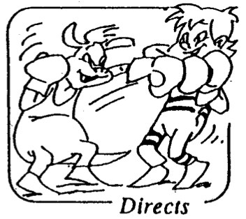
Les fouettés
- Trajectoire circulaire
- Donnés après une flexion/extension de la jambe, les hanches sont de profil
- Impact : le coup de pied
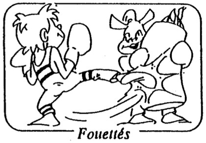
Les chassés
- Trajectoire rectiligne
- Donnés après un groupé de la cuisse sur les hanches, les hanches sont de face
- Impact : le talon
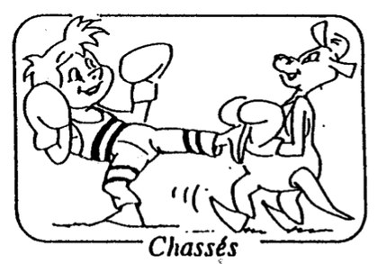
Les esquives
- Consistent à retirer la cible corporelle de l'attaque adverse
- 3 types d'esquive :
- L'esquive totale : recul des appuis
- Partielle : recul d'un seul appui
- Sur place : inclinaison du buste
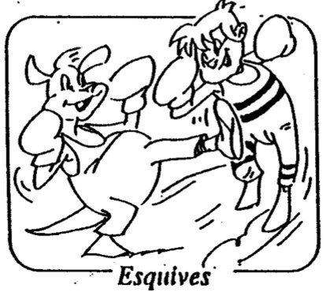
Les parades
- Il s'agit d'imposer son ou ses gants entre l'arme et la cible corporelle
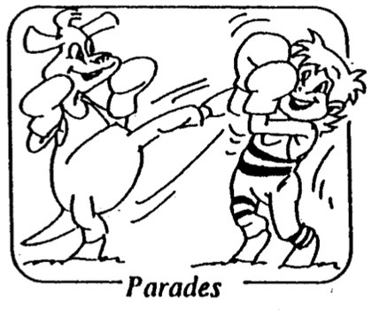
⚖️ La fiche de l'arbitre
Tout ce que tu dois dire et faire quand c'est ton tour d'arbitrer.
🟠 Avant l'assaut
- S'assurer que les juges et chronométreurs sont prêts.
- Annoncer les commandements :
« Tireurs au centre » « Saluez-vous » « En garde » « Allez »
🟣 Pendant l'assaut
- Règle du triangle avec les 2 tireurs.
- S'adapter à la vitesse et à la direction des déplacements des tireurs :
- S'ils sont peu mobiles : se déplacer avec eux.
- S'ils sont très mobiles : ne plus tourner, ou tourner en sens inverse.
- Se rapprocher d'eux dans les échanges aux poings, pour anticiper une mauvaise touche.
🔴 En cas de faute
Première fois :
- « Stop »
- Annoncer la faute : « Coup trop fort »
- « En garde » puis « Allez »
Récidive = avertissement :
- « Stop »
- « Tireurs à vos coins »
- « Je prononce un 1ᵉʳ avertissement pour le tireur … pour (faute) »
- « Tireurs au centre »
- « En garde » puis « Allez »
Au bout du 3ᵉ avertissement = disqualification.
🟢 À la fin
À la fin d'une reprise :
- « Stop »
- « Tireurs à vos coins »
À la fin de l'assaut :
- « Stop »
- « Tireurs au centre »
- « Saluez-vous »
🙌 Adopter une gestuelle adaptée
À chaque annonce correspond un geste, pour que tout le monde comprenne, même de loin.
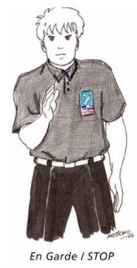
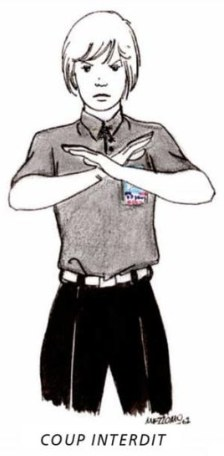
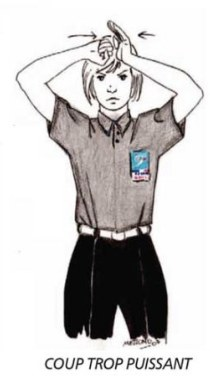
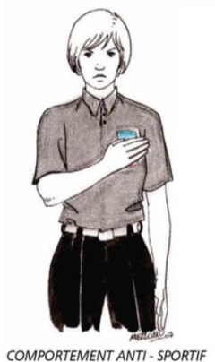
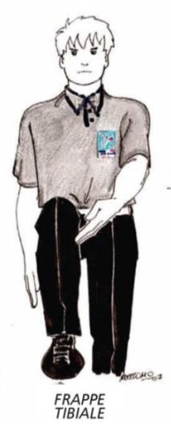
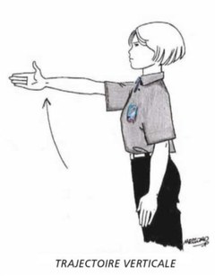
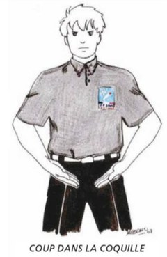
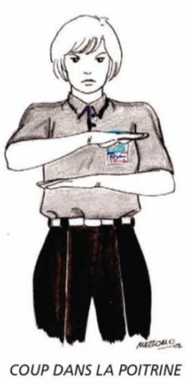
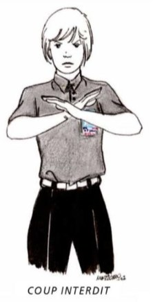
🧠 Quiz d'entraînement
🎯 Les attendus
À la fin de cette séquence, tu devras être capable de :
S'engager loyalement dans un assaut et en rechercher le gain tout en contrôlant ses touches, maîtrisant la distance pour toucher l'adversaire sans se faire toucher et en assurant sa sécurité et celle de son adversaire. Être capable de gérer un tournoi en assumant, en autonomie, les rôles d'arbitre et de juge.
| Rôle à jouer | Lien avec le socle commun |
|---|---|
| Le tireur |
|
| L'arbitre | Faire preuve de responsabilité, respecter les règles de la vie collective, s'engager et prendre des initiatives (domaine 3) |
| Le juge | Faire preuve de responsabilité, respecter les règles de la vie collective, s'engager et prendre des initiatives (domaine 3) |
| Le tireur fair-play | Respecter les adversaires, l'arbitre et être solidaire de ses partenaires (domaine 3) |
2. 🏉 Rugby flag
⭐ L'essentiel en 3 points
- Ton objectifEn 5 contre 5, faire avancer le ballon vers l'en-but par des courses et des passes vers l'arrière, et défendre en ligne.
- Comment tu es évaluéEn match, sur ton jeu en attaque et en défense, sur ton co-arbitrage et sur ton fair-play.
- La clé pour progresserL'organisation « en escalier » : reste légèrement derrière et sur le côté du porteur, et avance en même temps que le ballon.
✅ Acquisitions prioritaires
L'équipe (en attaque et en défense)
- Faire progresser le ballon vers l'avant en se faisant des passes vers l'arrière : l'organisation en « escalier » — être à distance de passe les uns des autres, se placer légèrement derrière et sur le côté du PB si je suis le joueur le plus proche de lui, avancer ensemble, en même temps que le ballon.
- Défendre en étant alignés les uns avec les autres, au bon espacement et en se répartissant les vis-à-vis.
Le joueur (en attaque et en défense)
- Passes en balancier : une main en bas du ballon, une main en haut du ballon, les épaules accompagnent le geste, je finis bras tendus en direction de ma cible, je prends l'information avant de faire ma passe.
- Réceptionner une passe : je suis concentré, je positionne mes bras tendus en face de moi pour indiquer la cible à mon partenaire, j'appelle mon partenaire.
- Faire une passe en direction d'un joueur mobile.
- Recevoir le ballon en se déplaçant.
- Accélérer lorsque je prends possession du ballon pour gagner du terrain.
- Aplatir en effectuant une pression du haut vers le bas sur le ballon dans la zone d'en-but.
- Récupérer et remettre en jeu rapidement le ballon : en fente, mettre le poids du corps sur la jambe opposée à la direction de la passe puis transfert du poids du corps.
- Changer rapidement de statut lors d'un ballon tombé ou au 6ème flag.
- Être réactif et dynamique sur les appuis pour arracher le flag ou intercepter les ballons : jambes légèrement fléchies avec poids du corps sur l'avant des pieds, bras préparés devant soi, prêt à intervenir, pieds légèrement décalés.
- Protéger sa zone d'en-but : se placer entre le porteur et ma zone d'en-but.
Le co-arbitre
- Connaître et maîtriser le règlement : engagement, ballon tombé, en-avant, hors-jeu, pas de raffut, interdiction de cacher ou protéger ses flags.
- Compter et annoncer le nombre de flags arrachés.
- Se déplacer et suivre le jeu en étant proche de l'action.
- Prendre et assumer ses responsabilités sans se faire influencer par les joueurs.
📖 Lexique
- Flag
- Drapeau velcro fixé à la ceinture. Le défenseur l'arrache pour arrêter la progression du porteur du ballon : c'est l'équivalent du plaquage, mais sans contact.
- Organisation en « escalier »
- La façon dont l'équipe se place en attaque : chaque joueur se tient légèrement derrière et sur le côté du porteur du ballon, à distance de passe. Vu d'en haut, l'équipe dessine un escalier. Cela permet d'avancer tous ensemble tout en passant le ballon vers l'arrière.
- Passe en balancier
- La passe de base du rugby : une main en bas du ballon, une main en haut, les épaules accompagnent le geste, et je finis bras tendus vers ma cible. Je prends l'information avant de faire ma passe.
- Aplatir le ballon
- Marquer l'essai : poser le ballon au sol dans la zone d'en-but adverse en exerçant une pression du haut vers le bas. Le simple fait de franchir la ligne ne suffit pas.
- Zone d'en-but
- La zone située au bout du terrain, derrière la ligne adverse : c'est là qu'il faut aplatir le ballon pour marquer.
- En-avant
- Faute commise quand le ballon part ou tombe vers l'avant des mains d'un joueur. Au rugby, le ballon ne peut se transmettre que vers l'arrière.
- Hors-jeu
- Un joueur placé devant le porteur du ballon est hors-jeu : il n'a pas le droit de participer à l'action.
- Raffut
- Geste interdit : le porteur du ballon repousse son adversaire avec le bras pour se dégager. L'arbitre siffle faute et la possession revient à l'équipe adverse.
- PB
- Porteur du Ballon.
Le savais-tu ?
Le rugby à 7, dont le rugby flag est une version sans contact, est discipline olympique depuis les Jeux de Rio 2016 — les Fidji y ont remporté leur toute première médaille olympique de l'histoire, en or.
🏳️ Règlement
📄 Voici toutes les règles du rugby flag, telles qu'elles te seront expliquées en cours. Tu peux les lire directement ici : il n'y a rien à télécharger.
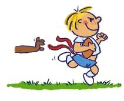
🎯 Le but du jeu : pour marquer un point, le joueur doit poser le ballon dans la zone d'en-but sans s'être fait enlever un flag : il y a alors « essai ».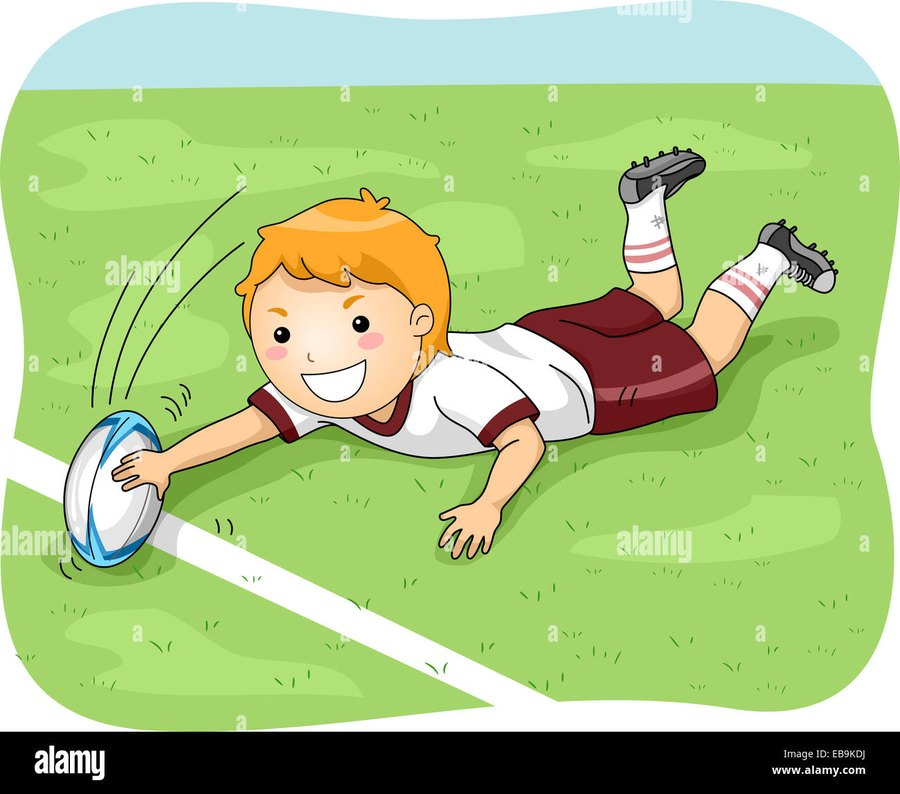
🏁 L'engagement
- Les 2 équipes sont placées devant leur en-but respectif.
- Un tirage au sort est effectué avant le début du match pour savoir quelle équipe va engager (je choisis que mon équipe engage ou, au contraire, qu'elle reçoive l'engagement).
- Le joueur qui engage donne un coup de pied dans le ballon, qui doit dépasser 5 m et rester dans l'aire de jeu même après plusieurs rebonds. Si le ballon sort, pénalité pour l'équipe adverse : on revient au milieu du terrain et l'équipe adverse recule à 3 m.
- Attention, l'équipe qui tape au pied ne monte pas en même temps que le ballon.
🏃 Pour se déplacer
- Le porteur de balle peut se déplacer librement sur le terrain, mais il ne peut passer le ballon qu'à un coéquipier placé derrière lui, et il ne peut pas se faire de passe à lui-même.
- Tout coéquipier placé devant le porteur de balle ne peut pas participer à l'action : on dit qu'il est hors jeu.
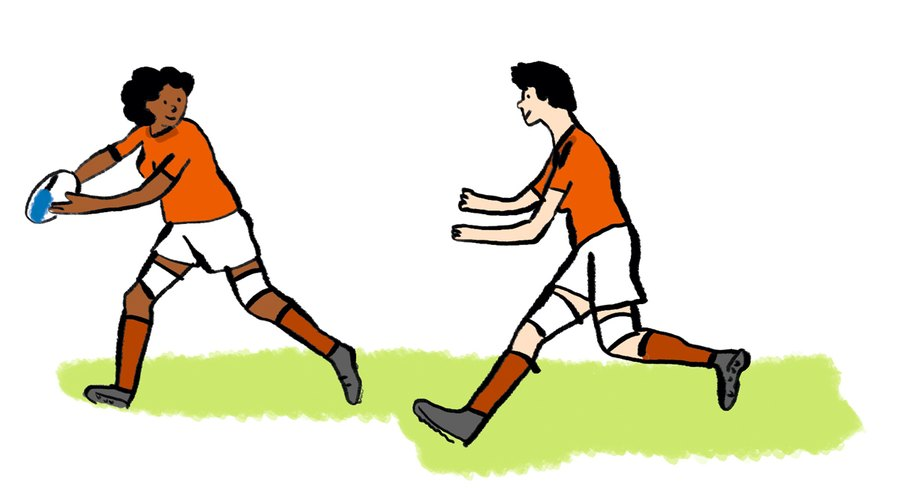
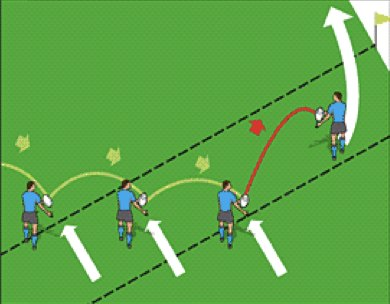
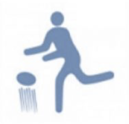
Pendant le jeu, un ballon tombé est un ballon qui revient à l'équipe adverse, même s'il tombe vers l'arrière : c'est une pénalité.🛑 Pour arrêter l'équipe attaquante
- Pour arrêter la progression du porteur de balle, le défenseur peut lui arracher le flag.
- Au bout du 6ᵉ flag arraché (l'arbitre doit annoncer le nombre de flags à chaque fois), on change la possession.
- Il est interdit d'attraper au-dessus des épaules, de tirer les cheveux, d'étrangler ou de faire des croche-pattes.
- Le joueur en possession du ballon n'a pas le droit de faire des raffuts en repoussant son adversaire, ni de courir avec sa main devant le flag pour le protéger. Si c'est le cas, l'arbitre siffle faute et la possession revient à l'équipe adverse.
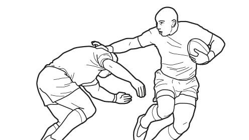
🚩 Lorsqu'un flag a été arraché
- Quand il y a « flag », le flagueur (le joueur qui a retiré le flag de son adversaire) lève le flag et reste à l'endroit où il l'a arraché.
- Le flagué doit alors faire l'effort de revenir à l'endroit où il s'est fait arracher le flag.
- Les 2 joueurs (flagueur et flagué) n'ont pas le droit de bouger tant que le ballon n'a pas fait 5 m vers l'arrière ou sur le côté.
- Pour relancer l'action, le flagué positionne le ballon entre ses jambes et le relayeur vient le remettre en jeu. Tous les joueurs en attaque doivent se situer derrière la ligne des talons du flagueur.
- L'équipe en défense recule de 5 m.
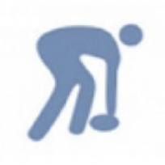
📏 Si le ballon sort des limites du terrain
- Sur les côtés : l'équipe non responsable de la sortie joue une touche à la main, en faisant une passe vers l'arrière à un coéquipier, à l'endroit où le ballon est sorti.
- Derrière l'en-but : l'équipe non responsable de la sortie joue à l'endroit où la dernière action s'est terminée, et l'équipe en défense recule de 5 m.
⚖️ Après une pénalité
- L'équipe qui reprend possession du ballon doit toucher le ballon avec son pied ou toucher le sol avec le ballon avant de pouvoir jouer.
🦶 Le jeu au pied
- Si un joueur joue au pied pendant le jeu, les autres joueurs de son équipe doivent être derrière lui au moment du coup de pied.
- Le ballon doit aussi être rattrapé de volée par un joueur de l'équipe attaquante. Sinon, on revient à l'endroit où le coup de pied a été donné (sauf s'il y a avantage).
🏫 Au collège, en 4e
- On joue en 5 contre 5, en situation aménagée.
- Tu alternes les rôles d'attaquant et de défenseur, et tu apprends à co-arbitrer une rencontre.
🧮 Auto-évaluation
Pour chaque critère, choisis le niveau de maîtrise qui te correspond le mieux. Tu obtiendras une estimation de ta note sur 20.
📊 Modalités d'évaluation
Grille d'évaluation — L'équipe et les joueurs
| Rôle à jouer | Critère | Maîtrise insuffisante | Maîtrise fragile | Maîtrise satisfaisante | Très bonne maîtrise |
|---|---|---|---|---|---|
| L'équipe en défense /4 |
Organisation collective en ligne | Défense isolée et désorganisée | Début d'organisation en ligne sur les phases arrêtées mais intervalles trop importants entre les joueurs par manque de communication | Bonne organisation en ligne sur les phases arrêtées mais des difficultés à la maintenir sur les phases de jeu | Défense alignée et replacée / Peu d'espaces concédés / Communication minimale mais efficace |
| 1 pt | 2 pts | 3 pts | 4 pts | ||
| Le joueur en attaque /6 |
Choix ballon en main (porteur de balle) /4 |
Panique lorsqu'il reçoit le ballon et/ou ne participe jamais aux phases offensives | Court sans observer, conserve le ballon ou le donne au hasard, court en faisant des travers | Alterne course et passe selon la situation, cherche à fixer puis transmettre mais ne fait pas toujours les bons choix | Lit rapidement le jeu, fixe efficacement et décale au bon moment |
| 1 pt | 2 pts | 3 pts | 4 pts | ||
| Placement (non porteur de balle) /2 |
Reste spectateur de l'action / Est souvent mal placé (devant le ballon) | Volonté de participer au jeu mais mauvais placement : trop loin ou dans l'axe du PB | Se rend disponible, se démarque et propose une solution de passe | Anticipe les actions, crée des espaces et offre plusieurs solutions au porteur | |
| 0,5 pt | 1 pt | 1,5 pt | 2 pts | ||
| Le joueur en défense /4 |
Placement /2 |
Pas concerné par la défense / Ne sait pas se placer | Temps de réaction au changement de statut long (se place tardivement) / Crée des intervalles car n'est pas en face de son adversaire | Bonne posture défensive / Sait se positionner selon les situations de jeu | Adapte constamment son placement à son adversaire / Régule ses coéquipiers / Leader de la défense |
| 0,5 pt | 1 pt | 1,5 pt | 2 pts | ||
| Arracher les flags /2 |
Intervient rarement ou manque souvent ses tentatives | Réalise quelques flags mais avec difficultés | Arrache régulièrement les flags de son adversaire direct | Très efficace dans ses interventions et limite fortement la progression adverse | |
| 0,5 pt | 1 pt | 1,5 pt | 2 pts |
Grille d'évaluation — L'arbitre et l'échauffé
| Rôle à jouer | Critère | Maîtrise insuffisante | Maîtrise fragile | Maîtrise satisfaisante | Très bonne maîtrise |
|---|---|---|---|---|---|
| L'arbitre /4 |
Connaissance et application du règlement | Ne connaît pas les règles et/ou ne participe pas au rôle d'arbitre | Hésitations dans la prise de décision à cause d'une connaissance trop légère du règlement et/ou trop loin de l'action | Se déplace pour être proche de l'action mais peut gêner les joueurs, applique les règles principales, se fait entendre | Anticipe les déplacements du jeu et se place de manière efficace, maîtrise les règles et communique avec assurance |
| 1 pt | 2 pts | 3 pts | 4 pts | ||
| L'échauffé /2 |
Gestion de l'échauffement | Pas d'échauffement et/ou fini largement avant le temps imparti | Gestion de l'échauffement aléatoire : beaucoup de temps sur un exercice et/ou peu d'implication | Échauffement complet et progressif / Bon échauffement de tous les joueurs / Élève suiveur de l'échauffement | Échauffement complet, différents thèmes travaillés / Élève leader de l'échauffement |
| 0,5 pt | 1 pt | 1,5 pt | 2 pts |
🎥 Vidéos de démonstration
Le geste de base du rugby flag : la passe.
🧠 Quiz d'entraînement
🎯 Les attendus
À la fin de cette séquence, tu devras être capable de :
En situation aménagée (5 contre 5), participer efficacement au jeu collectif en alternant des rôles simples d'attaque et de défense. En attaque, rechercher la progression de la balle vers l'en-but par des courses et des passes, tout en conservant le ballon. En défense, se replacer rapidement en ligne pour gêner la progression adverse. Être capable de co-arbitrer une rencontre.
| Rôle à jouer | Lien avec le socle commun |
|---|---|
| L'équipe (en attaque et en défense) | Mise en œuvre d'un projet prenant en compte les caractéristiques du rapport de force (domaine 2) |
| Le joueur (en attaque et en défense) | Développer sa motricité et acquérir des techniques spécifiques pour être plus efficace (domaine 1) |
| Le co-arbitre | Faire preuve de responsabilité, respecter les règles de la vie collective, s'engager et prendre des initiatives (domaine 3) |
| Le joueur fair-play | Respecter les adversaires, l'arbitre et être solidaire de ses partenaires (domaine 3) |
3. 🏸 Badminton (simple, grand terrain)
⭐ L'essentiel en 3 points
- Ton objectifEn simple sur grand terrain, construire le point en utilisant toute la surface : la longueur et la largeur.
- Comment tu es évaluéDes matchs par poules de niveau de 3'30, gérés en autonomie. Les rôles de coach et d'arbitre (feuille de match) sont évalués sur la séquence et le jour J.
- La clé pour progresserLe plus important : faire déplacer ton adversaire pour créer un espace libre, puis l'exploiter. Prends l'information sur son placement avant de frapper, sers en diagonale, puis alterne amortis et smashs.
✅ Acquisitions prioritaires
Le joueur
- Position d'attente et replacement central : le replacement central n'est pas une règle absolue mais une référence à adopter.
- Services en diagonale.
- Faire reculer son adversaire en utilisant le dégagé pour exploiter l'espace libre avant (révision).
- Maîtrise des frappes variées en vitesse (amortis et smashs).
- Faire déplacer son adversaire en utilisant des frappes variées en largeur.
- Prendre l'information sur le placement adverse.
L'entraîné
- Produire des trajectoires hautes pour favoriser le maintien de l'échange.
- Répéter un geste pour le stabiliser puis être capable de le réinvestir en situation de match : jeu des 3 zones.
- S'investir dans une routine de travail.
Le coach
- Analyser le jeu, les déplacements, les frappes de son partenaire et de son adversaire afin de lui donner des conseils pertinents lui permettant de prendre l'avantage sur le jeu.
L'arbitre
- Développer un arbitrage prenant en compte les règles suivantes : service, délimitations du terrain, fautes principales.
- Suivre et tenir une feuille de match.
- Compter les points et annoncer le serveur.
📖 Lexique
- Ligne de simple
- Ligne délimitant le terrain de jeu en simple, plus étroite que celle du double.
- Jeu au filet
- Ensemble des frappes réalisées près du filet (amortis, contre-amortis).
- Armé
- Position de préparation de la raquette avant la frappe.
- Dégagé
- Frappe haute et profonde qui envoie le volant au fond du terrain adverse.
- Amorti
- Frappe courte qui fait tomber le volant juste après le filet.
- Contre-amorti
- La réponse à un amorti adverse : tu es près du filet et tu remets le volant juste de l'autre côté, très court et très bas, au lieu de le relever haut. Bien fait, il oblige l'adversaire à se précipiter vers l'avant et t'évite de lui offrir un volant facile à smasher.
- Smash
- Frappe descendante et puissante destinée à conclure l'échange.
Le savais-tu ?
Le smash le plus rapide jamais mesuré au badminton est de 565 km/h (Satwiksairaj Rankireddy, 2023) — plus rapide qu'une voiture de Formule 1 !
🏳️ Règlement
🎬 Regarde la vidéo, puis relis les points essentiels juste en dessous. Tout ce qu'il faut retenir est écrit dans le texte : si tu n'as pas envie de regarder la vidéo, le texte suffit.
▶️ La vidéo se lit directement ici : tu n'as pas besoin d'aller sur YouTube.
🏸 Le service
- Je frappe le volant en dessous de ma taille, la tête de raquette dirigée vers le bas.
- Le serveur et le receveur doivent être immobiles, les deux pieds au sol, jusqu'à la frappe.
- Je sers à droite quand mon score est pair, à gauche quand il est impair.
- En simple sur grand terrain, le service doit être croisé en diagonale : il doit retomber dans le carré de service opposé.
🎯 L'échange
- Le volant ne doit jamais toucher le sol de mon côté.
- Je n'ai droit qu'à une seule frappe : pas de double touche, et je n'ai pas le droit d'« accompagner » (porter) le volant.
- Je n'ai pas le droit de toucher le filet avec ma raquette, mon corps ou mes vêtements.
- Ma raquette peut passer au-dessus du filet seulement dans le prolongement de ma frappe (l'accompagnement du geste).
- Un volant qui touche le filet puis retombe dans le terrain adverse est bon.
📏 Les limites du terrain
- Un volant qui tombe sur la ligne est bon.
- Un volant que je laisse tomber en pensant qu'il est dehors, mais qui touche la ligne, me fait perdre le point.
🔢 Le score
- Un point est marqué à chaque échange, que l'on serve ou non.
- Celui qui gagne l'échange sert au point suivant.
🤝 Le rôle de l'arbitre
- J'annonce le score à voix haute avant chaque service, en commençant par celui du serveur.
- Je surveille la hauteur du service (sous la taille) et les touches de filet.
🏫 Au collège, on adapte
- Cette année, tu joues en simple sur le grand terrain : le service est donc croisé en diagonale et les couloirs latéraux sont hors du terrain.
- Les matchs se jouent au temps (3'30) par poules de niveau : celui qui mène à la fin du temps a gagné.
🧮 Auto-évaluation
Pour chaque critère, choisis le niveau de maîtrise qui te correspond le mieux. Tu obtiendras une estimation de ta note sur 20.
📊 Modalités d'évaluation
Situation repère
- Les élèves sont évalués lors de matchs effectués par groupes de niveaux. Les matchs se font au temps et durent 3'30min (cela permet de gérer les matchs et de les faire tous commencer et terminer au même moment. De plus, les matchs au temps obligent les élèves à chercher à rompre l'échange le plus vite possible ne sachant pas quand le match va se terminer).
- Chaque élève est placé dans un groupe de « niveau ». La rotation des matchs, la gestion des rôles d'arbitre et de coach sont laissés en autonomie aux élèves qui doivent suivre leur fiche de poule.
- Le choix de l'évaluation par matchs de poules se fait au regard des terrains disponibles et des rôles à évaluer en parallèle (coach et arbitre).
- Les rôles de coach et d'arbitre sont évalués au fil de la séquence mais seront aussi observés lors de l'évaluation.
- Le rôle de l'entraîné est aussi évalué au fil de la séquence lors des situations d'apprentissage et des situations de réinvestissement.
Grille d'évaluation — Badminton 4e
| Rôle à jouer | Critère | Maîtrise insuffisante | Maîtrise fragile | Maîtrise satisfaisante | Très bonne maîtrise |
|---|---|---|---|---|---|
| Le joueur /10 |
Position d'attente et replacement | Position d'attente et replacement peu maîtrisés : ne se replace pas après sa frappe et/ou garde sa raquette en bas | Position d'attente présente mais passive (manque de dynamisme) / Replacement automatique au centre mais parfois inadapté à la situation | Position d'attente active (raquette haute, dynamique) / Replacement pertinent en fonction du coup joué | Position d'attente dynamique (anticipation) / Replacement optimisé (pas toujours au centre mais au bon endroit) permettant de prendre l'avantage |
| 0 pt | 1 pt | 1,5 pt | 2 pts | ||
| Service | Service pas maîtrisé ou pas règlementaire | Service règlementaire mais sans intention de marquer le point | Arrive à marquer quelques points grâce à son service | Met systématiquement en difficulté son adversaire dès le service et gagne le point | |
| 0 pt | 1 pt | 1,5 pt | 2 pts | ||
| Construction du point | Joue principalement dans la même zone et à la même vitesse : les frappes sont peu variées et ne mettent pas l'adversaire en difficulté | Construction du point limitée : tente de varier certaines frappes (long/court ou droite/gauche) mais de manière peu régulière ou inefficace | Construit le point avec une intention tactique simple : utilise différentes frappes pour déplacer l'adversaire (variation de vitesse, direction et largeur) | Adapte ses choix de frappes à la situation de jeu afin de prendre l'avantage : enchaîne des frappes variées pour créer puis exploiter un déséquilibre | |
| 1 pt | 3 pts | 4,5 pts | 6 pts | ||
| Le coach /4 |
Qualité et pertinence des conseils donnés | « Le supporter » — Observe peu le match ou donne des encouragements uniquement / Conseils absents ou peu liés au jeu | « L'observateur » — Repère quelques éléments simples du match / Donne des conseils généraux mais peu précis | « Le conseiller » — Observe attentivement le jeu et identifie les situations pertinentes / Donne des conseils précis en lien avec le match et/ou l'adversaire | « L'analyste » — Analyse le rapport de force pendant le match / Propose des conseils tactiques précis et adaptés |
| 1 pt | 2 pts | 3 pts | 4 pts | ||
| L'entraîné /2 |
Engagement dans les tâches d'apprentissage | « L'inintéressé » — Ne s'investit pas dans le travail de répétition (détournement de la tâche) | « Le persévérant » — Travail sérieux et volonté de réussir malgré les difficultés | « L'appliqué » — S'engage dans les tâches de répétition + réussite dans les différents niveaux | « L'assidu » — Engagement régulier + aide et conseille ses camarades |
| 0,5 pt | 1 pt | 1,5 pt | 2 pts | ||
| L'arbitre /3 |
Connaissance du règlement | L'arbitrage reste incomplet ou manque de rigueur (match souvent interrompu) | Le match est globalement géré mais certaines décisions manquent de précision ou d'autorité | Arbitre de manière autonome et fluide (score, règles et rythme du match bien gérés) | Arbitrage précis, impartial et fluide (anticipe les problèmes, gère les échanges contestés) |
| 0 pt | 1 pt | 2 pts | 3 pts |
🎥 Vidéos de démonstration
Les frappes à maîtriser cette année pour déplacer ton adversaire sur tout le terrain.
🧠 Quiz d'entraînement
🎯 Les attendus
À la fin de cette séquence, tu devras être capable de :
En simple et sur grand terrain, s'entraîner pour gagner le match en étant capable de construire un point pour rompre l'échange en utilisant l'ensemble du terrain (longueur et largeur) et en variant ses frappes pour déplacer et déséquilibrer son adversaire. Appliquer et faire appliquer le règlement et conseiller son partenaire.
| Rôle à jouer | Lien avec le socle commun |
|---|---|
| Le joueur | Pratiquer des APSA et acquérir des techniques spécifiques pour être plus efficient (domaine 1) |
| L'entraîné |
|
| Le coach | Faire preuve de responsabilité, respecter les règles de la vie collective, s'engager et prendre des initiatives (domaine 3) |
| L'arbitre | Faire preuve de responsabilité, respecter les règles de la vie collective, s'engager et prendre des initiatives (domaine 3) |
4. 🏀 Basket-ball
⭐ L'essentiel en 3 points
- Ton objectifEn 4 contre 4, marquer par des contre-attaques dès la récupération du ballon, face à une défense individuelle stricte.
- Comment tu es évalué4 matchs de 5 minutes (temps arrêté). Tir tenté en moins de 8 s qui touche le cercle = 1 point, panier en plus de 8 s = 2 points, panier en moins de 8 s = 4 points. Le co-arbitrage et l'observation sont aussi notés.
- La clé pour progresserOccupe les 3 couloirs de jeu, passe dans la course de ton partenaire et finis en double pas quand tu es seul face au panier.
✅ Acquisitions prioritaires
L'équipe (en attaque)
- Appliquer les principes d'une contre-attaque efficace : occupation des 3 couloirs de jeu (central et latéraux).
- Se projeter rapidement vers l'avant pour offrir une solution de passe longue.
- Prendre l'information sur le rapport de force (défense en place ou déséquilibrée).
Le joueur (en attaque et en défense)
Porteur de balle :
- Construire une passe tendue et longue afin d'atteindre un partenaire situé à 5/10m.
- Réaliser une passe dans la course de mon partenaire afin de ne pas ralentir la progression et garder le temps d'avance.
- Maîtriser le dribble de contre-attaque pour accélérer le jeu.
- Déclencher un double pas systématique quand je me retrouve seul face au panier.
- Faire des choix pertinents pour faire progresser le ballon (dribbler, passer, tirer).
Non porteur de balle :
- Démarquage rapide et vers l'avant et en utilisant les couloirs latéraux (contre-attaque).
Défenseur :
- Adapter sa défense au rapport de force adverse et à l'organisation de mon équipe : presser rapidement le PB pour ralentir sa progression.
- Être réactif au changement de statut.
Le co-arbitre
- Co-arbitrer une rencontre en faisant appliquer le règlement suivant : engagement au milieu du terrain (en début de match), marchés, reprises de dribble, fautes sur le porteur, pied, le porteur de balle ne peut tenir le ballon que 5 secondes maximum lors d'une remise en jeu, sorties de terrain.
- Être réactif et se montrer ferme dans sa prise de décision, se déplacer en suivant la ligne du ballon.
Le joueur fair-play
- Encourager et relativiser les erreurs de chacun.
- Respecter les adversaires quelle que soit l'issue du match.
- Faire confiance aux arbitres et respecter leurs décisions.
L'observateur
- Relever des indicateurs pertinents permettant de rendre compte de l'efficacité d'un joueur ou d'une équipe (pertes de balle, passes réussies/tentées, efficacité aux tirs…).
- Remplir efficacement la fiche d'observation afin de relever un score juste à la fin du match.
📖 Lexique
- Double pas
- Tir en course près du panier, après une ou deux foulées (lay-up).
- Écran
- Blocage positionnel utilisé pour libérer un partenaire.
- Marcher
- Faute commise en se déplaçant sans dribbler avec le ballon.
- Double dribble
- Faute commise en dribblant à nouveau après avoir repris le ballon à deux mains.
- Contre-attaque
- Attaque rapide déclenchée juste après la récupération du ballon, avant que la défense ne se réorganise.
- PB / NPB
- Porteur du Ballon / Non-Porteur du Ballon.
🏳️ Règlement
🎬 Regarde la vidéo, puis relis les points essentiels juste en dessous. Tout ce qu'il faut retenir est écrit dans le texte : si tu n'as pas envie de regarder la vidéo, le texte suffit.
▶️ La vidéo se lit directement ici : tu n'as pas besoin d'aller sur YouTube.
🏀 Marquer des points
- 2 points pour un panier marqué dans le jeu.
- 3 points pour un panier marqué derrière la ligne à 3 points.
- 1 point par lancer franc réussi.
🚶 Se déplacer avec le ballon
- Pour avancer avec le ballon, je dois dribbler.
- Marcher : faire plus de 2 appuis sans dribbler.
- Reprise de dribble : une fois mon dribble arrêté, je n'ai plus le droit de redribbler — je dois passer ou tirer.
- Retour en zone : une fois le ballon passé dans le camp adverse, mon équipe ne peut plus revenir dans son propre camp.
🤝 Les fautes
- Le basket est un sport où le contact est limité : pousser, retenir, frapper le bras du tireur sont des fautes.
- Une faute sur un joueur en train de tirer donne droit à des lancers francs.
- Un joueur qui commet 5 fautes est sorti du match.
⏱️ Les règles de temps
- 3 secondes : un attaquant ne peut pas rester plus de 3 secondes dans la raquette adverse (la zone sous le panier).
- 5 secondes pour remettre le ballon en jeu.
- 8 secondes pour franchir la ligne médiane.
- 24 secondes pour tirer.
🏫 Au collège, en 4e
- On joue en 4 contre 4.
- On n'utilise pas la règle de la raquette (les 3 secondes) : tu peux rester sous le panier sans être sanctionné.
- Pendant l'évaluation, on compte les points autrement pour valoriser la contre-attaque : un tir tenté en moins de 8 s qui touche le cercle vaut 1 point, un panier marqué en plus de 8 s vaut 2 points, et un panier marqué en moins de 8 s vaut 4 points.
🧮 Auto-évaluation
Pour chaque critère, choisis le niveau de maîtrise qui te correspond le mieux. Tu obtiendras une estimation de ta note sur 20.
📊 Modalités d'évaluation
Situation repère
- Jouer et co-arbitrer un tournoi où chaque équipe fait 4 matchs de 5 minutes (temps arrêté) en 4 contre 4 sur un terrain de basket.
- L'évaluation se fera en 2 temps : sur le créneau de 2h (le lundi), les équipes seront homogènes entre elles et hétérogènes en leur sein ; sur le créneau de 1h (le mardi), les équipes seront réalisées par niveaux et chaque équipe de niveau jouera sur un terrain.
- 4 équipes qui jouent (sur 2 terrains) en 4 vs 4 avec le 5ème joueur qui complète la fiche d'observation.
- Le score est calculé par les remplaçants des équipes qui jouent qui observent et s'occupent de gérer les 8 secondes.
- 3 façons de marquer des points : tir tenté en moins de 8 secondes qui touche le cercle rouge par le haut = 1 point ; panier marqué en plus de 8 secondes = 2 points ; panier marqué en moins de 8 secondes = 4 points.
- L'équipe qui arbitre se répartit les rôles : 2 arbitres centraux (1 par ½ terrain) qui s'occupent de signaler les fautes (contacts, 3 secondes, reprise de dribble, marchés) par terrain ; 1 arbitre qui gère le temps (5 minutes en temps arrêté).
- Le rôle de l'arbitre (pratique et théorie) sera évalué en amont.
Grille d'évaluation — Basket-ball 4e
| Rôle à jouer | Critère | Maîtrise insuffisante | Maîtrise fragile | Maîtrise satisfaisante | Très bonne maîtrise |
|---|---|---|---|---|---|
| L'équipe en attaque /6 |
Score total par match (moyenne des 3 meilleurs matchs) | Moins de 3 pts | Entre 4 et 8 pts | Entre 9 et 13 pts | 14 pts ou + |
| 1 pt | 3 pts | 4 pts | 6 pts | ||
| Le joueur en attaque /4 |
Faire des choix pertinents pour faire progresser la balle et tirer dans des situations favorables | « Le passif » — Ne participe pas aux attaques de son équipe / Beaucoup de pertes de balles (mauvaises passes, dribbles excessifs) / Tire de manière inopportune | « Le joueur volontaire maladroit » — Passes courtes précises mais longues interceptées / Pertes de balle sous pression défensive / Démarquage trop proche du porteur | « Le joueur efficace » — Tire efficacement en situation favorable / Pas de perte de balle / Se projette lors des CA / Rebond offensif | « Le joueur expert » — Efficacité dans les tirs et les passes / Bons choix offensifs qui font basculer le rapport de force / Toujours en mouvement |
| 1 pt | 2 pts | 3 pts | 4 pts | ||
| Le joueur en défense /4 |
Perturber la progression de l'équipe adverse | « Le défenseur absent ou dangereux » — Reste immobile, ne défend pas / Joueur explosif ou dangereux | « Le défenseur attentiste » — Bien positionné (entre PB/NPB et le panier) mais rapidement pris de vitesse par son vis à vis | « Le défenseur efficace » — Toujours bien placé / Quelques interceptions / Rebond défensif | « Le défenseur expert » — Presse, coupe les lignes de passe, intercepte, aide ses partenaires dépassés / Toujours au rebond défensif |
| 1 pt | 2 pts | 3 pts | 4 pts | ||
| Le co-arbitre /4 |
Maîtrise des règles du jeu | « Le passif ou perturbateur » — Absent du match ou cherche à imposer son autorité et ses décisions | « L'assisté ou l'influençable » — Sa connaissance du règlement est parcellaire et/ou il est influençable (ne s'affirme pas pendant le match) | « Le basketteur » — Connaît et fait appliquer les principales règles / Se déplace en suivant la ligne du ballon | « Le basketteur expert » — Arbitrage des règles précises, fait assurer un climat serein |
| 1 pt | 2 pts | 3 pts | 4 pts | ||
| Le joueur fair-play /2 |
Respect de ses adversaires, arbitres et partenaires | Contredit l'arbitre ou râle sur ses partenaires / S'énerve sur ses adversaires lorsqu'ils commettent des fautes | Ne s'arrête pas tout le temps après le coup de sifflet de l'arbitre / Ne joue qu'avec certains de ses partenaires | Applique et respecte les décisions de l'arbitre / Bienveillance envers ses partenaires | Conseille, écoute et encourage ses partenaires |
| 0 pt | 0,5 pt | 1 pt | 2 pts |
🎥 Vidéos de démonstration
- Le règlement du basket (arbitrage) — lien à ajouter
- Le double pas en contre-attaque — lien à ajouter
- La passe tendue longue — lien à ajouter
- Le démarquage rapide vers l'avant — lien à ajouter
🧠 Quiz d'entraînement
🎯 Les attendus
À la fin de cette séquence, tu devras être capable de :
En 4 contre 4, rechercher le gain du match en organisant un projet de jeu qui vise à produire des contre-attaques au moment de la récupération du ballon face à une défense déséquilibrée qui cherche à stopper la progression et à se réorganiser (défense individuelle stricte). Co-arbitrer avec assurance et fiabilité et observer avec pertinence. Respecter les adversaires et les arbitres, être solidaire de ses partenaires.
| Rôle à jouer | Lien avec le socle commun |
|---|---|
| L'équipe (en attaque) |
|
| Le joueur (en attaque et en défense) |
|
| Le co-arbitre |
|
| Le joueur fair-play |
|
| L'observateur |
|
5. ⚡ Relais vitesse 2x40m
⭐ L'essentiel en 3 points
- Ton objectifRéaliser le meilleur 2 × 40 m possible en transmettant le témoin alors que les deux coureurs sont à pleine vitesse.
- Comment tu es évaluéSur 3 leçons : ton 40 m individuel (record battu = +1 point), la technique de transmission en donneur et en receveur, la performance du relais, et le rôle de juge-chronométreur.
- La clé pour progresserTrouve ta marque de départ, cours sans te retourner et tends le bras au « HOP » du donneur.
✅ Acquisitions prioritaires
L'athlète (donneur, receveur)
Donneur :
- Adopter une position dynamique de départ : jambes semi-fléchies, bras opposé à la jambe avant vers l'avant.
- Être réactif aux commandements et pousser sur sa jambe avant.
- Se décaler d'un côté du couloir en fonction de la main qui tient le témoin afin que ce dernier soit au milieu.
- Donner le signal « HOP » au bon moment pour le receveur (2 bras tendus).
Receveur :
- Adapter sa position d'attente à la position dans le couloir du donneur.
- Contrôler l'arrivée du donneur en regardant au-dessus de son épaule.
- Trouver la marque optimale à partir de laquelle lancer sa course lorsque le donneur la dépasse.
- Courir à pleine vitesse sans se retourner et tendre le bras au « HOP » du donneur.
Le binôme
- Transmission du témoin lorsque le donneur ET le receveur sont à vitesse maximale.
- Mettre en place un projet de course : dans quelle main je tiens le témoin, dans quel ½ couloir je cours, quelle main je tends lors de la transmission.
- Le temps du 2x40m doit être inférieur aux 2 temps individuels sur 40m additionnés.
L'échauffé
- Connaître et appliquer les étapes d'un échauffement spécifique en relais-vitesse (articulations, mise en train progressive avec gammes, étirements, accentuer sur les parties du corps les plus sollicitées, travail de la transmission).
Le juge-chronométreur
- Connaître et appliquer le règlement relatif au départ/arrivée, à la chute du témoin, à la zone autorisée pour la transmission du témoin.
- Être attentif lors du chronométrage d'une course (perpendiculaire à la ligne d'arrivée, réactivité au signal du starter, arrêter le temps quand la ligne des épaules du coureur passe la ligne d'arrivée).
📖 Lexique
- Témoin
- Bâtonnet transmis d'un coureur à l'autre pendant le relais.
- Zone de transmission
- Portion de piste où la transmission du témoin est autorisée.
- Donneur
- Coureur qui part en premier et transmet le témoin.
- Receveur
- Coureur qui reçoit le témoin et termine la course.
- Course lancée
- Fait de démarrer sa course avant de recevoir le témoin, pour ne pas perdre de vitesse.
- Marque
- Repère au sol permettant au receveur de savoir à quel moment démarrer sa course.
Le savais-tu ?
Le record du monde du 100 m est de 9,58 secondes (Usain Bolt, 2009) — à cette vitesse de pointe, il roulait à plus de 44 km/h, soit la vitesse d'un cyclomoteur. Le record du monde de triple saut est de 18,29 m (Jonathan Edwards, 1995), à peu près la longueur d'un bus articulé. Et le record du monde de lancer de javelot est de 98,48 m (Jan Železný, 1996), presque la longueur d'un terrain de football (105 m) !
🏳️ Règlement
Ce sont les règles que le juge-chronométreur doit connaître et appliquer :
- Connaître et appliquer le règlement relatif au départ/arrivée, à la chute du témoin, à la zone autorisée pour la transmission du témoin.
- Être attentif lors du chronométrage d'une course (perpendiculaire à la ligne d'arrivée, réactivité au signal du starter, arrêter le temps quand la ligne des épaules du coureur passe la ligne d'arrivée).
🧮 Auto-évaluation
Pour chaque critère, choisis le niveau de maîtrise qui te correspond le mieux. Tu obtiendras une estimation de ta note sur 20.
📊 Modalités d'évaluation
Situation repère
- L'évaluation de relais vitesse s'effectue sur 3 leçons.
- Lors de la première, les élèves seront chronométrés sur un 40m départ arrêté afin de remettre à jour les temps réalisés au début de la séquence. Si le temps réalisé sur 40m le jour de l'évaluation est inférieur à celui réalisé lors de la première leçon (record battu), un bonus d'1pt est automatiquement attribué à l'athlète. En parallèle, le rôle de chronométreur sera évalué en comparant l'écart entre le temps obtenu par le chronométreur et celui obtenu par la professeure.
- Lors de la seconde leçon, les rôles de donneur et receveur ainsi que la technique de transmission sera observée. Chaque groupe aura choisi, au préalable, 3 combinaisons dans lesquelles ils sont les plus efficaces et permettant à chacun d'être évalué une fois dans le rôle de donneur, une fois dans le rôle de receveur (4 combinaisons pour les groupes de 4).
- Lors de la dernière leçon, la performance en 2x40m de chaque groupe sera chronométrée. L'objectif est que cette dernière soit inférieure au temps cumulé des 2 performances individuelles sur 40m des coureurs. Chaque groupe passera 3 fois (en gardant les mêmes combinaisons que la leçon précédente). Si le témoin tombe, l'athlète sort de son couloir ou la transmission se fait en dehors de la zone, la performance ne sera pas mesurée.
- Les groupes de relais ont été constitués en début de séquence par les élèves et sont restés fixes.
Grille d'évaluation — Relais vitesse 2x40m 4e
| Rôle à jouer | Critère | Maîtrise insuffisante | Maîtrise fragile | Maîtrise satisfaisante | Très bonne maîtrise |
|---|---|---|---|---|---|
| Donneur /3 |
Attitude au départ, signal donné | Le donneur n'est pas concentré sur son départ : parle et/ou n'est pas sur sa ligne / Il ne court pas à sa vitesse maximale | Temps de réaction très long au départ qui fait perdre du temps au donneur / Pas de signal donné au receveur ou non audible | Donneur concentré et réactif aux commandements du starter / Le signal « HOP » est dit mais trop tôt ou tard | Attitude de départ efficace : réactivité + léger déséquilibre avant sur les premières foulées / « HOP » audible et au bon moment |
| 0 pt | 1 pt | 2 pts | 3 pts | ||
| Receveur /3 |
Marque de départ, attitude de course | Posture de course passive : pas de marque, le receveur commence à courir lorsque le donneur est à sa hauteur | Le receveur part trop tôt ou tard à cause d'une marque aléatoire / Court avec le bras tendu en arrière | Bonne attitude d'attente du receveur : il sait quand partir et où se positionner dans le couloir / Présentation du bras parfois trop tôt | Le receveur attend sur un côté du couloir, le regard par-dessus son épaule / Course déclenchée quand le donneur passe la marque, ne se retourne pas et tend le bras seulement au « HOP » |
| 0 pt | 1 pt | 2 pts | 3 pts | ||
| Binôme /6 |
Vitesse lors de la transmission | Transmission à l'arrêt — La transmission du témoin se fait à l'arrêt et/ou le témoin est transmis hors zone/pas transmis | Transmission non coordonnée — Le donneur ou le receveur doit ralentir sa course lors de la transmission et/ou les coureurs se rentrent dedans | Transmission continue — Maintien de la vitesse des coureurs lors de la transmission | Transmission efficace — Le témoin est transmis lorsque les 2 athlètes sont à vitesse maximale |
| 0 pt | 0,5 pt | 1 pt | 1,5 pt | ||
| Projet de course | Pas de projet de course (s'adaptent au dernier moment) | Le passage du témoin se fait de la même main | Projet de course annoncé et respecté | Projet de course annoncé, respecté et performant | |
| 0 pt | 0,5 pt | 1 pt | 1,5 pt | ||
| Performance réalisée | Le temps du 2x40m est supérieur aux 2 temps individuels cumulés | Le temps du 2x40m est égal aux 2 temps individuels cumulés | Le temps du 2x40m est inférieur de 0,5 seconde par rapport aux 2 temps individuels cumulés | Le temps du 2x40m est inférieur de plus de 0,6 seconde par rapport aux 2 temps individuels cumulés | |
| 0 pt | 1 pt | 2 pts | 3 pts | ||
| L'échauffé /4 |
Réalisation de l'échauffement | Pas d'échauffement ou dure moins de 2' | Échauffement discontinu, incomplet et/ou pas adapté à l'activité relais-vitesse | Échauffement progressif et continu mais parfois en décalage avec la spécificité du relais | Échauffement progressif, continu et complet + spécifique à l'activité relais |
| 1 pt | 2 pts | 3 pts | 4 pts | ||
| L'officiel /2 |
Attitude (prendre et assumer des responsabilités) | Pas concerné par ses fonctions : ne chronomètre pas | Le temps est chronométré mais manque d'attention : mauvais placement, discute en même temps | Bon placement : perpendiculaire à la ligne d'arrivée + concentré / Temps recueilli avec précision | Bon placement : perpendiculaire à la ligne d'arrivée + concentré / Temps recueilli avec précision |
| 0 pt | 0,5 pt | 2 pts | 2 pts | ||
| Investissement /2 |
Moyenne des notes d'investissement au cours de la séquence (s'engager dans les activités) | Pas d'investissement | Investissement aléatoire en fonction des leçons, beaucoup de rappels à l'ordre | Bon investissement dans l'ensemble malgré quelques déconcentrations lors d'1 ou 2 leçons | Très bon investissement, attitude sérieuse et régulière tout au long de la séquence |
| 0 pt | 1 pt | 1,5 pt | 2 pts |
🧠 Quiz d'entraînement
🎯 Les attendus
À la fin de cette séquence, tu devras être capable de :
Réaliser la meilleure performance possible dans un relais de 2x40m en coordonnant les vitesses de course du donneur et du receveur afin d'assurer une transmission valide et efficace. Juger et chronométrer avec sérieux la performance de son groupe. Être capable de s'échauffer en autonomie afin de préparer son corps à un effort intense.
| Rôle à jouer | Lien avec le socle commun |
|---|---|
| L'athlète (donneur, receveur) | Développer sa motricité et acquérir des techniques spécifiques pour être plus efficace (domaine 1) |
| Le binôme | Mise en œuvre d'une stratégie collective prenant en compte les caractéristiques de chacun afin de réaliser la meilleure performance possible (domaine 2) |
| Le juge-chronométreur | Faire preuve de responsabilité, respecter les règles de la vie collective, s'engager et prendre des initiatives (domaine 3) |
| L'échauffé | Connaître les principes d'un échauffement à réaliser en sécurité afin de ne pas se mettre en danger (domaine 4) |